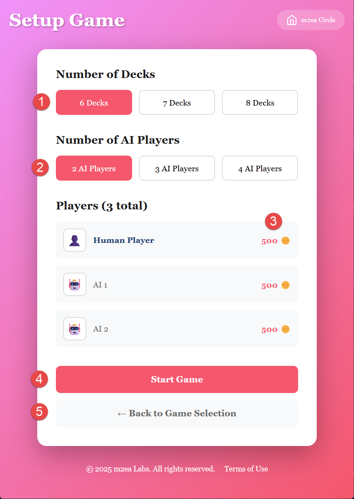

1. Sélectionner le nombre de jeux de cartes
Choisissez le nombre de jeux de cartes à utiliser dans le jeu. Le Blackjack Switch utilise généralement plusieurs jeux.
2. Sélectionner le nombre de joueurs IA
Choisissez combien de joueurs IA rejoindront le jeu. Ces joueurs contrôlés par ordinateur joueront à vos côtés à la table.
3. Jetons de départ
Les jetons par défaut du Blackjack Switch sont de 200. Si vous perdez tous vos jetons, vous ne pouvez pas jouer pendant 24 heures. Après 24 heures, vous recevrez un nouvel ensemble de 200 jetons.
4. Démarrer le jeu
Une fois que vous avez configuré vos paramètres, cliquez pour démarrer le jeu et passer à la phase de paris.
5. Retour à la sélection de jeu
Vous pouvez revenir à l'écran de sélection de jeu si vous souhaitez choisir un jeu différent ou consulter les règles.
Qu'est-ce que le Blackjack Switch ?
Le Blackjack Switch est une variante unique où vous jouez deux mains simultanément et avez la possibilité d'échanger la deuxième carte distribuée à chaque main. Cela crée des opportunités stratégiques intéressantes mais comporte des règles modifiées pour équilibrer l'avantage.
Notes importantes :
Assurez-vous de configurer vos paramètres préférés avant de commencer. La limite de jetons est conçue pour encourager un jeu responsable et offre une pause naturelle si vous perdez vos jetons.
